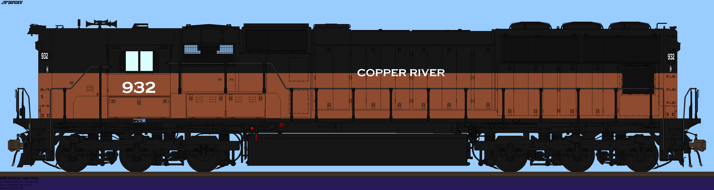
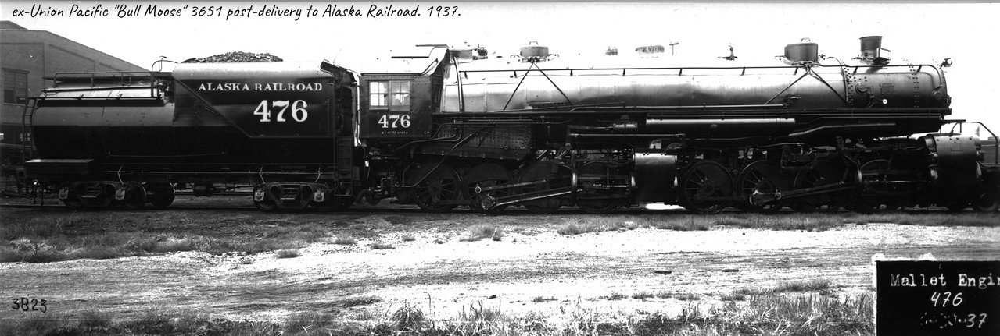
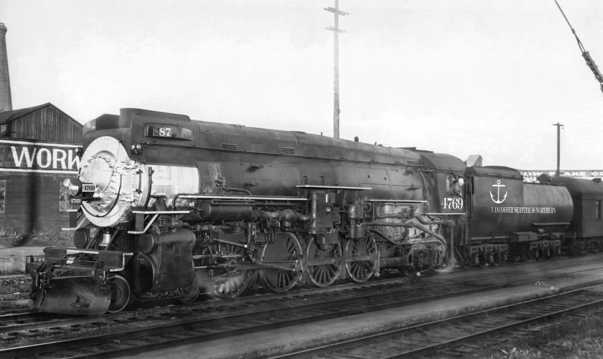

Some of the Alaska's Railroads
Copper River & Northwestern
The Copper River & North Western Railway is a railroad running from Cordova on the coast of Alaska, to Coal Creek inland, roughly 400 miles long. The railroad got its start in the early 20th century, when some railroads in the area surrounding Cordova, Katalla, and Macon Alaska, were all merged by the Alaska Syndicate to create the CR&NW. The Alaska Syndicate, made mostly of the Gugenheim Family, sought to exploit the Copper veins up north from Cordova. From there, the CR&NW built their trackage up the Copper River itself, constructing the most impressive feat in Alaskan engineering up to that point. The Million Dollar Bridge. Said bridge would later be damaged heavily by the 1964 Good Friday Earthquake. They reached Chitina, and then turned East, where they finally reached Kennecott Alaska, later known as McCarthy. The exports from the Copper would lead to the CR&NW, and the Syndicate gaining much bank from this, later extending the Chitina line from Tressider, to Lucania, a few miles East, to access more Copper reserves. The money from the copper made the CR&NW consider an extension to their line. From Chitina, they extended the north to Glenallen, where they met up with the Anchorage Southern. They once again turned north, through Mentasta Pass, and into Tok. They then turned west, with intentions of getting to Fairbanks, but only made it as far as Delta Junction. Later on in the late 20s, the CR&NW attempted an extension to Eagle, but only made it as far as Chicken, before they ran out of materials. The Eagle Extension would not be completed until the mid-70s, when Alaska Governor Jay Hammond made it possible for them to extend to Eagle. Finally in 1975, they made it to Eagle, and as a part of Jay Hammond’s other visions, they extended to Coal Creek, where they interchanged with the Alaska Northern Railroad. As of 2024, the CR&NW doesn’t haul as much Copper any more, but they do haul plenty of Lithium from Coal Creek to assist the market of batteries! Thanks to this, they might as well be called the Lithium River from now on!
Alaska Northern Railroad #476
Alaska Northern Railroad #476, otherwise known as ‘Buzzwinkle’ is a mammoth 2-8-8-0 locomotive, originally built for the Union Pacific as 3651. The lumbering 2-8-8-0 was built by the American Locomotive Company in 1924, and worked on the UP for roughly 13 years. In 1937, the 3651 was put up for sale for seemingly unknown reasons. Although, the arrival of more versatile motive power seems to be a contributing factor as to why it was put up for sale. Some scrapping companies placed their bets on it, but it was surprisingly the Alaska Northern Railroad that bought up the 3651! Union Pacific, was taken aback by this, but happily obliged, and sent the 2-8-8-0 North, via the VS&N, and ASRR, before it arrived in Anchorage in September of 1937. Once it arrived, it was cosmetically altered to fit the ANRR’s locomotive roster. While this was undertaken, the shophand working to get 476 ready, were encountered by a Moose inside the shops! The moose stole their booze, and ran. The many shophand's present then gave chase after it, and pinned it down just 500ft from the shop complex. Thanks to this, they dubbed 476 ‘Buzzwinkle’ by the shophands, who scribbled the name on the smokebox door. When thrown into service, 476 worked up the Loop District of the ANRR, shoving trains up the loops between Portage and Seward. It would only reach its peak in helper service during WW2, when the ANRR, alongside the rest of Alaska, were thrown into constant military traffic. 476 during this time would both assist trains up the Loops, and haul its own trains from Seward and Anchorage, even making it to Talkeetna during this time. Once WW2 came to a close, also came the Loop Districts’ remodelling, with easier grades, and smoother curves, making 476 redundant in helper service. Also with this came the arrival of Diesel locomotives. 476 would cling onto the ANRR until 1959, when it was retired. It was thankfully not scrapped, as it was saved, and placed inside the Alaska Transport Museum in Wasilla, where it is in pristine condition, on static display. Unfortunately, there are no chances of it returning to steam, but it is still a marvel to see the massive locomotive, still standing. Thousands of miles from its original stomping grounds.
Vancouver Seattle & Northern #4769
VS&N 4769 is one of the Vancouver, Seattle & Northern’s many 4-8-2 Mountain Type locomotives built by the VS&N’s own Seattle Shops in 1929. Designated a MT-5 from before being built, 4769 was outshopped in August of 1929, with the Railroad’s CA-2 Vanderbilt Tender behind it, and without Skyline Casing. 4769 was sent off to work on the Princeton Division from Vancouver BC, to Portland Oregon. Usually, 4769 would haul merchandise freight, and usual Passenger duties between the two cities in the Northwest. However, in 1935, the VS&N rolled out their new ‘Cascadian’ Train, which ran from Oakland California to Vancouver, and return. The motive power for this train was unfortunately delayed from entering service, so the VS&N called upon their most capable locomotives to run the train in the meantime. 4769 was one of these, and was painted in the paint scheme of the Cascadian. Brown, Green, and Silver. Alongside this, 4769 was given a Skyline Casing, and a new CA-5 Vanderbilt Tender to seemingly blend in with the streamlined passenger cars. About 3 months after receiving the paintwork, the Cascadians' new streamlined 4-6-4’s were ready for servicer, and 4769 was taken off the Cascadian, and back onto regular passenger trains, though retaining the features gained from the brief stint on the streamlined consist. When World War 2 came about, 4769 was transferred from Portland to Prince George BC, to assist Canada with the war effort. During this time, 4769 ran on tracks owned by the Columbia River, Canadian National, Canadian Pacific, as well as it’s own trackage. Reportedly, 4769 ran over Rogers Pass assisting a CP 2-10-4 ‘Selkirk Type’ during a fierce snowstorm, with a long train of Ammunition bound for the Royal Navy in the Pacific. Once the USA entered the war, 4769 were thrashed running trains across the west coast. After W2, 4769 was rebuilt, and returned to service, but wasn’t to last long. Diesels arrived on the VS&N, and by 1961, 4769 would be the last 4-8-2 to run on the VS&N, being retired in Seattle the same year. However, it would not see the end just yet. Many individuals banded together, and saved 4769 from the Seattle Scrap Yards in 1962! This would signal the beginnings of the Seattle Railroad Museum. 4769 would remain out of service at the SRM until 1970, when it was restored and returned to operation. Its most notable trip of this time was in 1972, when it ran from Seattle to Portland on an excursion train, managing to make it to 80 MPH! A speed it was never intended to operate at from the time it was designed! The MT-5 would run until 1987, making it to events such as Railfair 81’ and Expo 86, as well as meeting with BGKRR 20 on its trip to Alaska in the mid-70s, when boiler problems forced it off the road. It wasn’t until 2011, when 4769 returned to the rails. To this day, 4769 has ran all across the Pacific North-west, meating with steam stars such as Southern Pacific 4449, Spokane Portland & Seattle 700, Oregon Railroad & Navigation 197, and it’s of course, Canadian Pacific 2811, it’s excursion brother in arms if you will. While it is scheduled for a 1472 day inspection come 2026, 4769 is going to be around for a long time yet.
